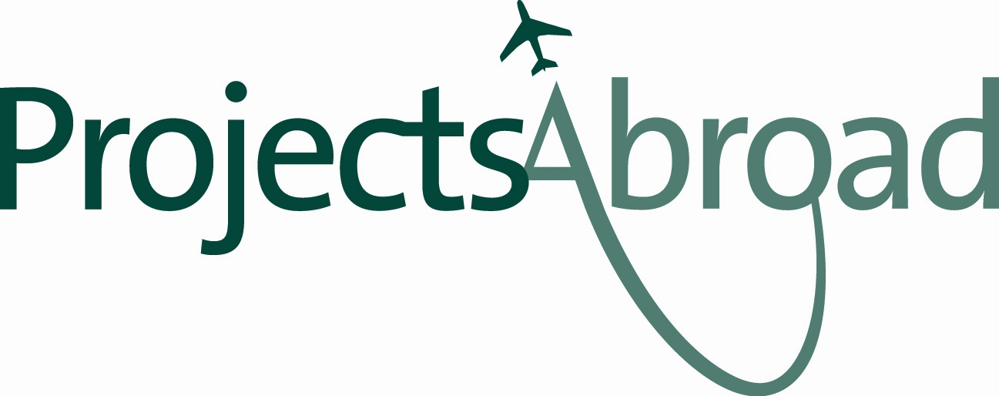

B.Sc International Management student at King's College London
London, United Kingdom
King's College London
salome.cavailhes@kcl.ac.uk
Athletics
Drawing
Traveling
We live in a world that is powered by globalization; today companies contribute to creating and innovating the society in which we live in and this has always thrilled me.I was brought up in an environment in which business always played an important role, with both my parents being business owners. I want to be able to become an accomplished entrepreneur that will be able to face the challenges of today and tomorrow.
• Bsc International Management - Kings College London | 2017 - 2021
Having received three unconditional offers for various managerial courses including UCL, LSE and KCL I am now able to study in one of the world’s leading fashion capital. My degree focuses on the basics of management with a worldwide opening, allowing us to learn a new language and to study international markets.
• Short course Fashion Management - UAL | 2016
I had the opportunity to be taught by Alison Lowe, an entrepreneur who built up her own company supporting promising fashion labels, I learnt more about fashion and how management was essential to it.
• French Baccalauréat S - Ecole Privée Bilingue de Baillargues | 2012 - 2016
Baccalauréat Scientifique - 17,26 / 20 – Mention trés bien CAE Cambridge - A
• Schooling - Nobel International School Algarve, Portugal | 2004 -2012
French GSCE – A*
I worked in various sectors including sales, HR and marketing as well as product management and strategic planning for 8 months
Great experience working at such a busy time of the year, requiring organization and team effort.
I lived and worked in a remote part of Botswana, in the savannah-like landscape of the Southern African bush. I helped protect local wildlife, like elephants, leopards, lions, and more. This was an amazing chance to see these incredible creatures in their natural habitat and learn about real conservation work.
I got the opportunity to get involved and get my hands dirty working on elephant research, anti-poaching patrols, and much more. I had the opportunity to be be supervised by conservation experts that helped us with our mission to create a space where animals can roam freely and thrive.
I was based at the Wild at Tuli reserve by the Limpopo River. We spent the hot afternoons cooling down alongside the pool and evenings exchanging stories around the fire with other volunteers.
This wildlife conservation volunteer project was the ultimate bush adventure and I cannot wait to go again.
